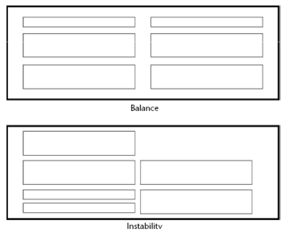
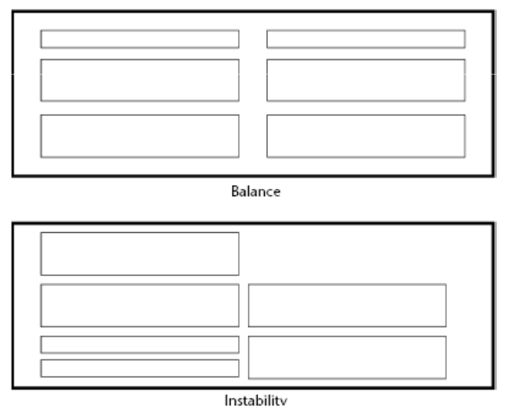
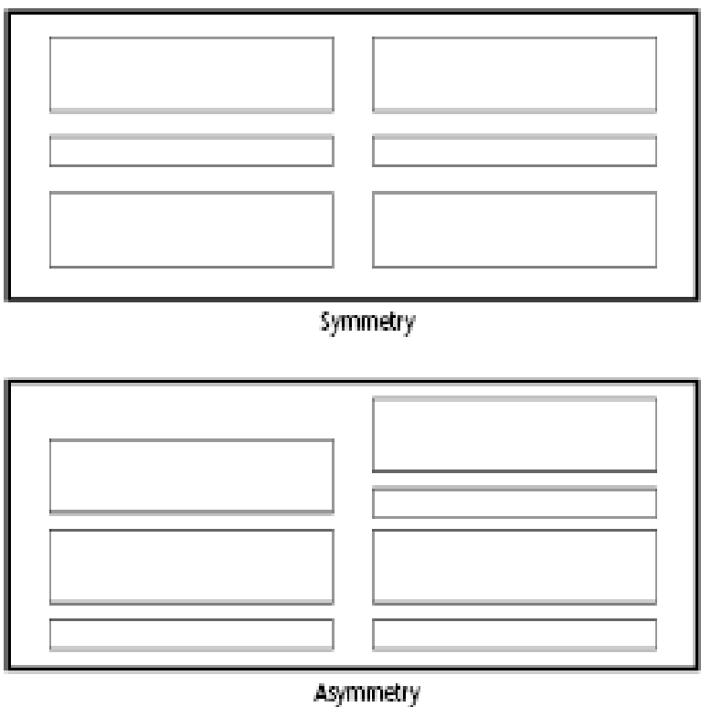
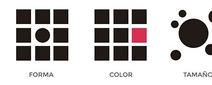

Balance
Distribuye los elementos de forma equilibrada para evitar la sensación de sobrecarga visual.
El diseño centrado en el usuario se enfoca en crear interfaces intuitivas y agradables, priorizando las necesidades y preferencias de los usuarios.

Distribuye los elementos de forma equilibrada para evitar la sensación de sobrecarga visual.
Utiliza simetría para transmitir orden y armonía en tu diseño.
Destaca los elementos más importantes usando tamaño, color o posición.
